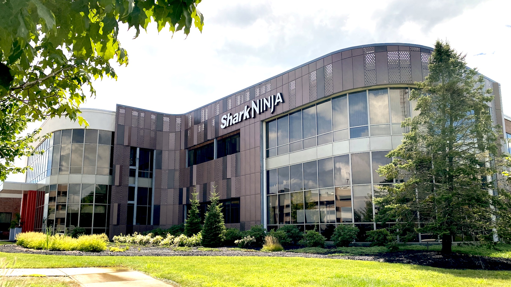

Shark Facial Pro Glow: Hydro-Powered Facial System
Employer: SharkNinja | Role: Senior R&D Engineer | Year: 2024

Developed the first hydro-powered exfoliation system for consumer home use. This flagship product blends mechanical engineering, materials science, and human-centered design to deliver professional-grade skin results.
🔹 General Summary
- Designed and validated fluidic pathways and pump control algorithms ensuring consistent hydro-exfoliation pressure and flow dynamics across skin types.
- Integrated multi-sensor feedback and firmware control loops for real-time safety and performance adjustments.
- Collaborated cross-functionally with industrial designers and regulatory teams to meet ISO and FDA consumer safety standards.
⚡ Technical Challenges
- 💡 Implemented custom CFD models to predict flow shear stress on skin during exfoliation cycles.
- 🔥 Developed calibration routines for micro-pump systems using Python-based test harnesses and DAQ integration.
- ⚙️ Overcame noise and vibration resonance in multi-speed motor control through PID tuning and vibration isolation design.
⭐ Leadership & Accomplishments
- 🧠 Led a 5-person R&D sub-team driving clinical validation and worked directly with external dermatological labs.
- 🎤 Presented final product design and functional testing results to the CEO and executive leadership team.
- 🏆 Delivered product from prototype to launch in under 9 months, now publicly available in U.S. and international markets.
🧰 Core Skills & Tools
MATLAB
Python
SolidWorks
Data Acquisition (NI-DAQ)
Signal Processing
Product Validation

As part of R&D at Shark Beauty, I work on skincare devices. Here are two of the products I've worked on that launched this year!
FacialPro Glow - Hydro-powered facial system
- Conducted root cause analysis, using fluid mechanics to decide small pump system architectures for flow and vacuum. Built early stage proof of concepts and prototypes to perform user tests on volunteers, measuring on-skin biophysical properties to determine performance
- Python-based computer vision pipelines to analyze skin reflectance under cross-polarized vs standard white light, enabling objective quantification of therapeutic effects.
- pressure selection

FacialPro - Hydropowered facial system
Informational video on facial pro here!
Parts that made this challenging were
My contribution to this product
- Initial prototyping/proof of concepting
- KPI development and initial topical development
- pressure selection and suggestion
- image analysis development for skin metrics and properties
CryoGlow - Low-Level Laser Light Therapy

Cryoglow LED mask system
Informational video on cryoglow here!
Informational video on cryoglow here!
My contribution to this product
- validate on face heatmaps of dose
- spearheading clinical trials for claims
- baselining prototypes and competitors
- PID prototype creation for cooling pads